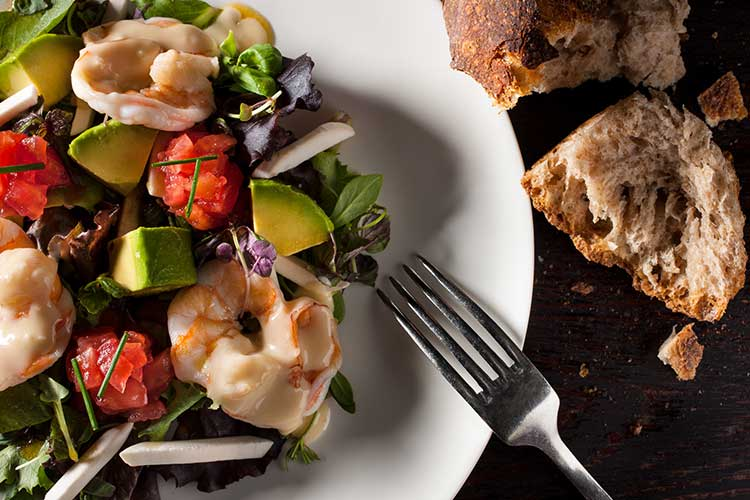
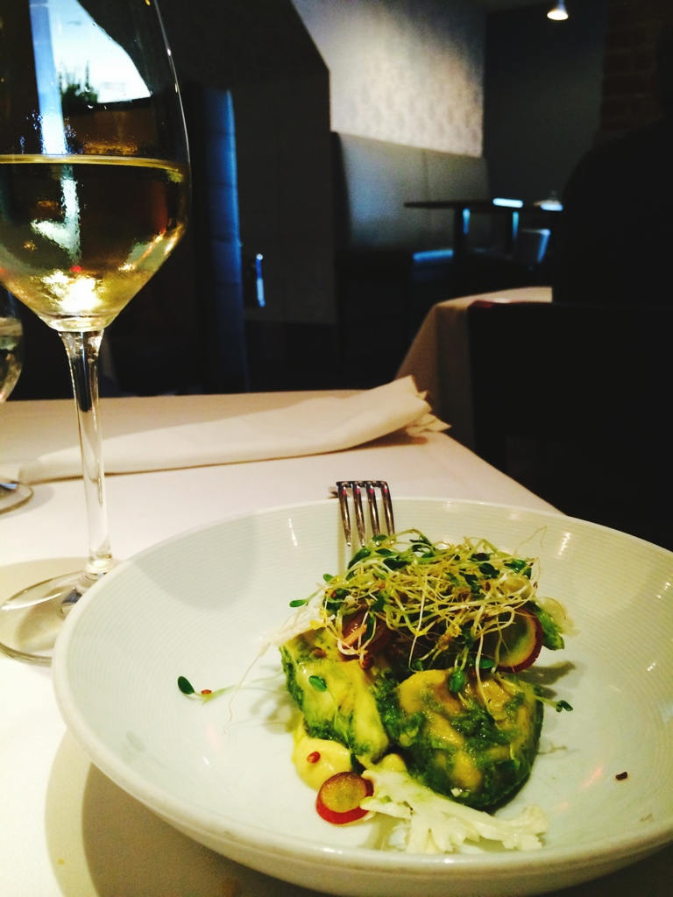

NYC Restaurant Week Summer 2015
Every summer and winter, NYC Restaurant Week returns with a long list of restaurants in NYC. From trendy newcomers to fine-dining standbys, the event draws bargain-hunting New Yorkers to try out new spots and revisit old favorites serving cheap eats. Let's see my top 3!
-
Nougatine at Jean George

- Hours:12:00 pm - 3:00 pm
5:30 pm - 6:00 pm
10:00 pm - 11:00 pm
- Address:1 Central Park W, New York, NY 10023
-
Dovetail

- Hours: 5:30 pm - 10:00 pm
- Address:103 W 77th St, New York, NY 10024
-
Gothem

- Hours:12:00 pm - 10:00 pm
- Adress:12 E 12th St, New York, NY 10003
New York is a facinating city because of its diversity, ancient histroy, and beautiful people. Just like Carrie says in the Sex and the City:
"A bad day in New York
is still a better day than
a good day in anywhere else."
Back to Table of Content